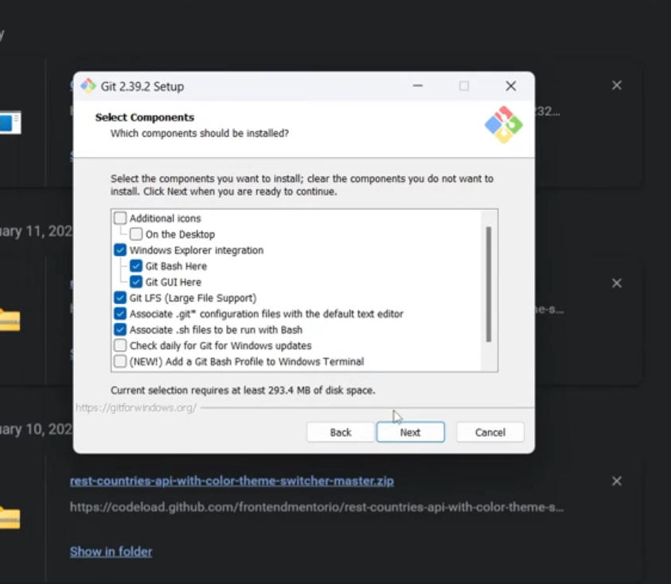

LECTURE 01 · THE BASICS
5 MIN READ
First, let's talk
about the terminal.
Before Git, there’s the place where we talk to our computer: a terminal, a shell, and a whole lot of new words.
↗
GUI or CLI — what’s the difference?
A GUI (Graphical User Interface) lets us interact visually — click, point, and explore. A CLI (Command-Line Interface) lets us do the same kind of work by typing commands.
GUI = visual. CLI = command based. Both are ways to interact with software; they just feel different to use.
CMD, PowerShell, Cloud Shell, and Bash are all shells. CMD and PowerShell are associated with Windows, while Bash is common on Linux. Commands can differ from shell to shell — sometimes even when the task is the same.
For learning server workflows, I’m focusing on Bash — it’s a useful common ground when working with Linux-based servers.
One way to picture a terminal: it’s like a browser window, and shells are a bit like the different places you can work inside it. The comparison isn’t exact, but it helps me get started.
A NOTE TO SELF
A terminal is an application. A shell is the command interpreter it runs. The CLI is the text-based way we interact with a program — it isn’t just another name for the terminal.
01 QUESTIONS I’M STILL EXPLORING
How can a Windows terminal run Bash, which is associated with Linux?
A terminal app provides the window; a shell provides the command environment. Windows can host different shell environments, so the terminal itself doesn’t have to be “a Linux terminal.” I’m still exploring exactly how each setup works.
Is CLI a program, or is the terminal the CLI?
CLI means Command-Line Interface — a way to interact with software using text commands. The terminal is an app where you can open a shell and use a CLI.
LECTURE 02 · MEET GIT
6 MIN READ
Git is more than
a command.
Git gives us a way to track changes, revisit earlier versions, and manage work — on our own or with a team.
Installing Git also gives us useful tools and ways to work, like Git Bash, Git GUI, and Git CMD. Git’s graphical interface didn’t feel right for me, so I decided to explore the source code and learn the commands instead.
Git isn’t tied to one shell. We can use Git commands in Git Bash or other shells — the main idea is what Git does with our project.
01 / TRACK
Version control
Git tracks changes to a project, so we can understand how work evolves and manage it individually or as a team.
02 / STORE
Repository
A repository stores and tracks the versions of our project. It’s a little like a database, but it isn’t a database in the usual sense.
THE GIT WORKFLOW
Working tree → staging area → commit
⌁
Unstaged changes are the work in your current working directory that hasn’t been committed yet. Add the changes you want to keep to the staging area, review them, and then commit.
01 EDIT02 STAGE03 COMMIT
02 QUESTIONS I’M STILL EXPLORING
What are the parts shown in this Git diagram?
These are the components I’m trying to understand from the Git setup diagram:

What does it mean when Git uses Vim as an editor?
Git can open a text editor for things like commit messages. I selected VS Code instead, and I’m learning what that setting changes.
How are Git CMD and Git Bash different?
They provide different command-line environments for working with Git. The shell commands and behavior can differ, even though Git is available in both.
What database does Git use?
Git’s repository stores project history in its own object database. The database comparison is a helpful starting point, but it isn’t the same as a typical application database.
Why do commands have flags like -s and --global?
Flags modify a command’s behavior. For example, -s asks git status for a shorter display, while --global applies a Git configuration setting for the current user.
QUICK REFERENCE · 01
Terminal basics
>_
A tiny cheat sheet for finding your way around.
lsList files and folders
cd folder-nameMove into a folder
cd ../Move up one folder
mkdir folder-nameCreate a folder
touch file-nameCreate an empty file
pwdShow the current location
software --versionCheck a software version
.codeOpen VS Code at the current directory
start file-nameOpen a file from Git Bash on Windows
↳ The original notes also mention rm and rmdir for removing files and empty folders. Double-check a command before using it: removal can be permanent.
QUICK REFERENCE · 02
Git basics
git
The commands from my first Git notes, with a little context.
git initStart a repository in the current folder
git statusSee what changed and what is staged
git add file-nameStage selected files for a commit
git add .Stage changes in the current directory
git commit -m "message"Save staged changes with a message
git config --global user.name "Name"Set your name for Git commits
git config --global user.email "you@example.com"Set your email for Git commits
git logReview the commit history
git checkout commit-idVisit a specific point in history
git status -sShow a shorter status summary
✳Before your first commit: set your Git user name and email, then check git status to review what you’re about to save.